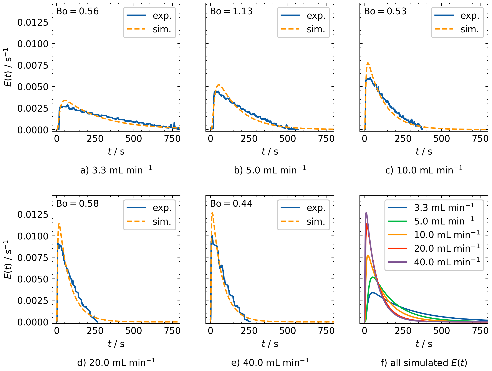

Residence Time Distribution Model Software Overview
Summary
The Residence Time Distribution (RTD) model software is designed to analyze experimental RTD data obtained from the Falling Film Looping Photoreactor (FFLPR). It processes raw data files, fits an axial dispersion model to the experimental data, and calculates key parameters such as the mean residence time and Bodenstein number. It is available here: RTD Model Software.
Contents
00_Processed_Data/: Processed and evaluated.csvfiles.01_Figures/: Plots of the RTD analysis.main.ipynb: Jupyter Notebook with RTD analysis code.
Installation
Install the required Python packages using:
pip install --only-binary :all: -r requirements.txt
Requirements
Python 3.11
All required Python packages are listed in
requirements.txt.
Models and Equations
To determine the Bodenstein number from the RTD experiments, an axial dispersion model with closed–closed boundary conditions [1] is fitted to the experimental data. The input signal is modeled as an ideal Dirac pulse, since injection time ≪ residence time.
The implementation is based on the rtdpy package [2]. Detailed equations and boundary conditions can be found in the rtdpy documentation: https://merck.github.io/rtdpy/AxialDispersion_cc.html
The mean residence time \(\bar{\tau}\) is calculated as the first moment of the experimental residence time density function \(E_{\mathrm{exp}}(t)\):
Results
The figures and table below summarize the results of the RTD analysis as a function of external flow rate.
Mean Residence Time and Bodenstein number
Flow Rate (mL min⁻¹) |
Mean Residence Time (s) |
Hydrodynamic Mean Residence Time (s) |
Bodenstein Number (1) |
|---|---|---|---|
3.3 |
272.02 |
363.64 |
0.56 |
5.0 |
174.05 |
240.00 |
1.13 |
10.0 |
119.29 |
120.00 |
0.53 |
20.0 |
80.91 |
60.00 |
0.58 |
40.0 |
73.21 |
30.00 |
0.44 |
{kind=link}
Comparison of Experimental Data and Simulation
{kind=link}
Simulated RTD Functions at Increasing Flow Rates